澳門手信 · 郵票誌 · 開卷
澳门最小的手信
杏仁饼会吃完，凤凰卷会碎，只有邮票，方寸之间，韵出万里。作为独特的伴手礼，适合送给品得了苦茗的朋友。
我非常喜欢这种方寸压缩的信息感，这次就在澳门邮品店里选了十二套，给大家探一探背后的故事。
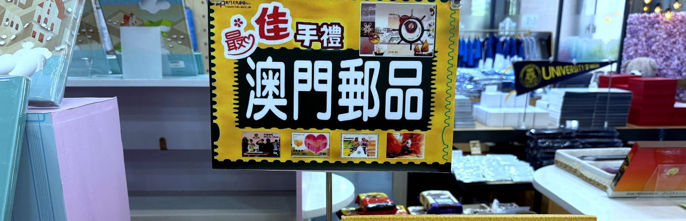
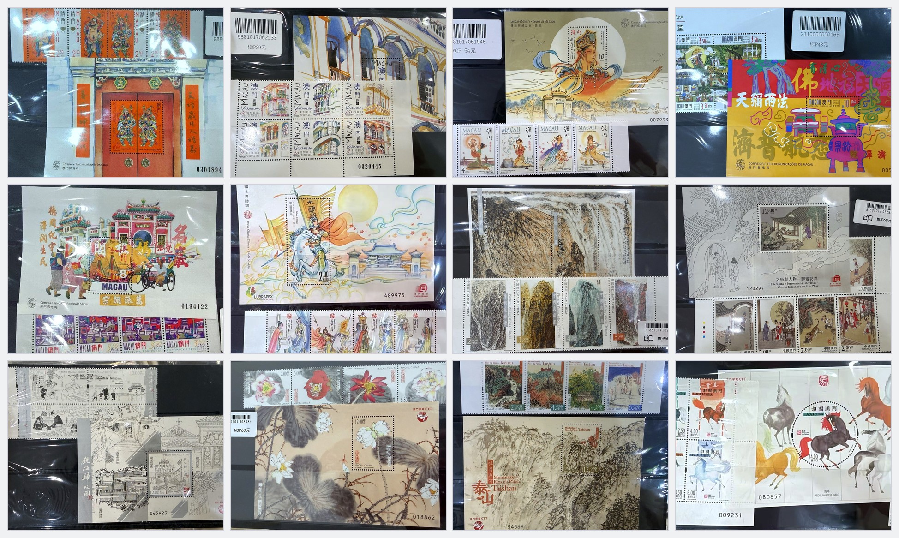
澳門手信 · 郵票誌 NO.01
邮票上的两代门神
神荼（shēn shū）和郁垒（yù lǜ）、秦琼尉迟恭——中国人门上贴了两千年的两代门神，1997 年被澳门印进了邮票。小型张干脆做成一整扇大红门，对联门神一应俱全。
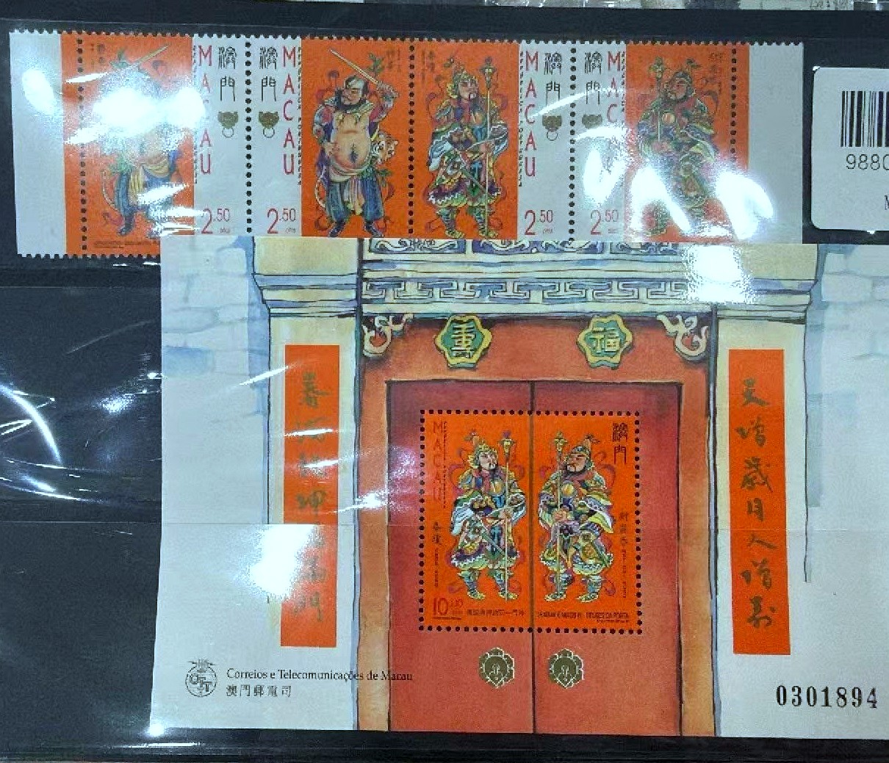
《传说与神话（四）—门神》· 套票 4 枚 + 小型张
澳門手信 · 郵票誌 NO.02
水彩里的澳门骑楼
葡国人叫它 Varandas，中国人叫它骑楼。六枚水彩手绘，把澳门老街的阳台、百叶窗和招牌，画得比照片还温柔梦幻。
骑楼是岭南气候与葡式外廊的混血儿——底层柱廊遮阳避雨，二楼以上的阳台（Varanda）装有木制百叶窗（Persiana），既挡西晒又透海风
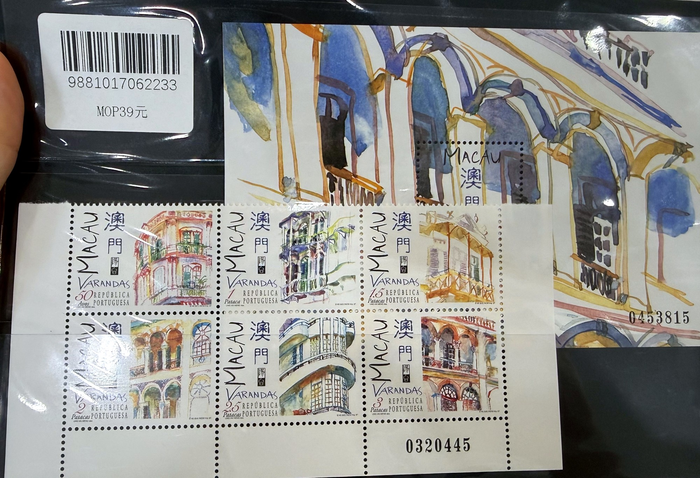
《Varandas 阳台》· 小版张 6 枚 + 小型张
澳門手信 · 郵票誌 NO.03
妈祖，所有中国水手的天后娘娘
澳门的英文名 Macao，就来自澳门最早的古迹——妈阁庙。四枚邮票讲完妈祖一生：默娘降生、仙赐铜符、灵女升天、天后显灵；
小型张上，妈祖立在妈阁庙前，背光如月。把人神两界叠在了一起：脚下是澳门最古老的真实庙宇（妈阁庙），头顶是神格化的天后娘娘，恰好对应了这套邮票的核心叙事：澳门这座城市，就是妈祖信仰从人间升入神话的见证者。
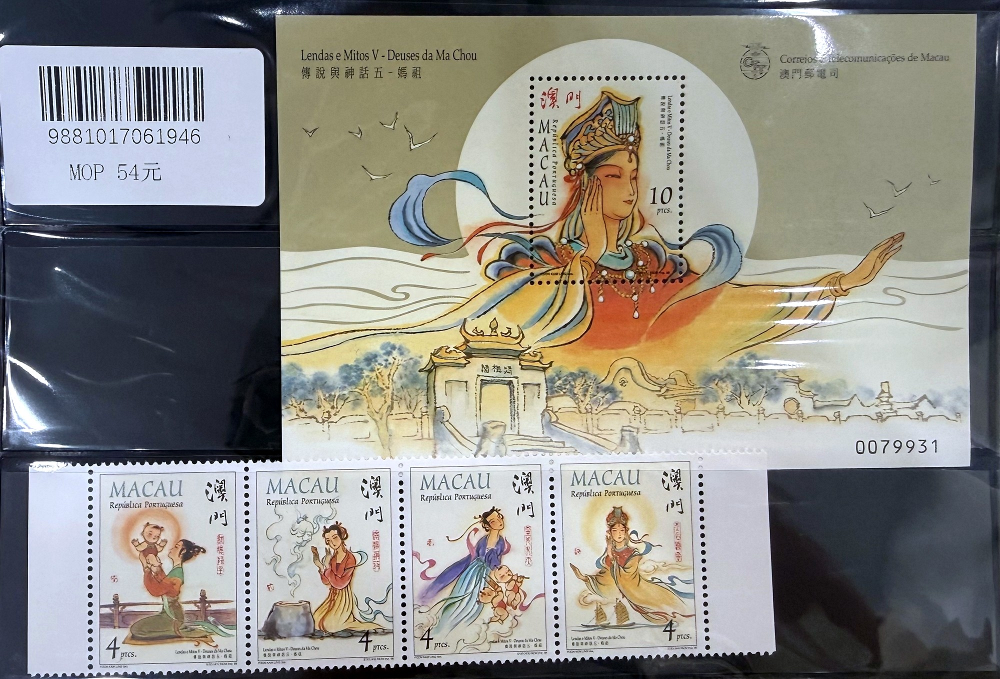
《传说与神话（五）—妈祖》· 套票 4 枚 + 小型张
澳門手信 · 郵票誌 NO.04
三百年观音堂
澳门三大古刹里，观音堂（普济禅院）最清净。邮票把山门、殿堂、庭院、后花园画成彩绘。
1844年7月3日，美国专使顾盛（Caleb Cushing）与清廷两广总督耆英，在普济禅院后花园的一张圆形花岗石桌上，签订了中美第一个不平等条约《望厦条约》。这张石桌和四条石凳至今仍在后院原处。百年后，禅院于石桌后方立一亭碑，记述此事，警示国人莫忘国耻
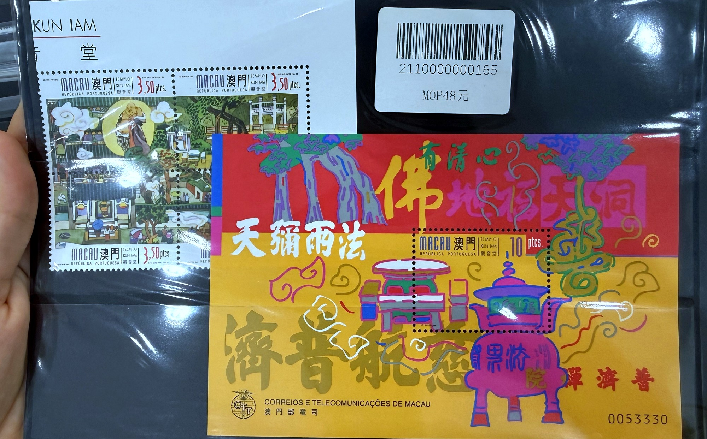
《观音堂 Templo Kun Iam》· 连票 + 小型张
澳門手信 · 郵票誌 NO.05
三轮车夫轮下的旧澳门
载客指路、翘首等客、树下小憩——六枚连票画尽三轮车夫的一天。2000 年的澳门，三轮车还是街头风景；现在，只剩邮票里有了。三轮车夫的日常被"铺"在了澳门最标志性的石板地上——车是人力的，地是殖民的，而生活是混血的。
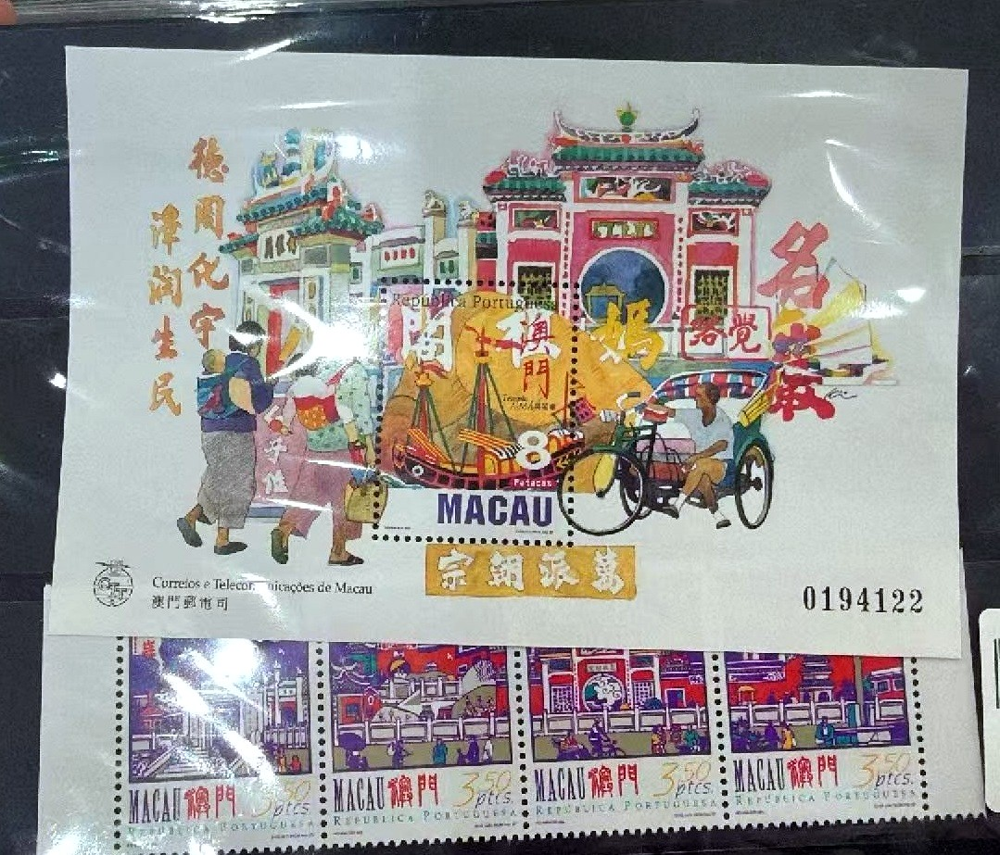
《三轮车夫的生活方式》· 套票 6 枚 + 小型张“悠然小憩”
澳門手信 · 郵票誌 NO.06
邮票上重读《木兰辞》
代父从军、善战立功、拒赏还乡、惊辨英雌——四枚邮票四段故事，每枚都印着《木兰辞》原句。
小型张定格木兰披甲上马的一瞬。回望“唧唧复唧唧”，前路：“将军百战死，壮士十年归”
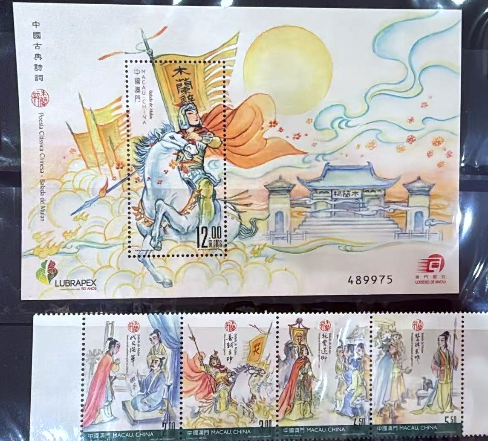
《中国古典诗词—木兰辞》· 套票 4 枚 + 小型张（LUBRAPEX 加字版）
澳門手信 · 郵票誌 NO.07
泼墨山水，寄自澳门
四枚泼墨山水，全部出自澳门画家孙蒋涛之手。山不在澳门——但看山的人在。壹：山中一夜雨，石上飞流泉；贰：丹霞秋色 广东韶关丹霞山； 叁：苍翠神农架，湖北神农架原始森林； 肆：峡江金秋，长江三峡秋景。
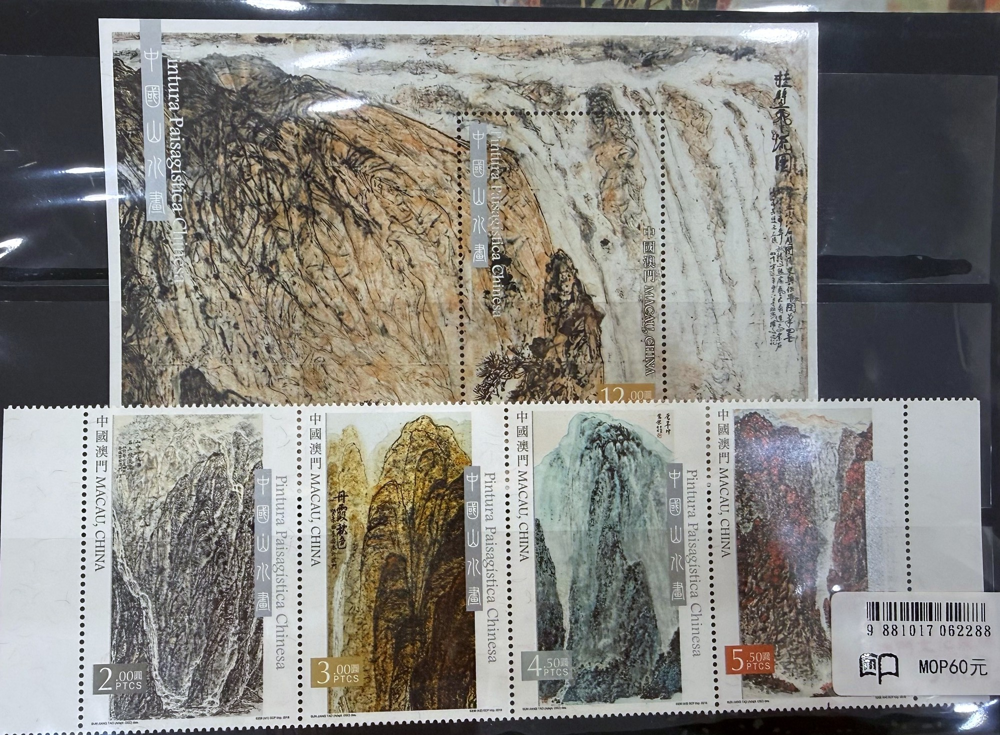
《中国山水画》· 套票 4 枚 + 小型张 · 原作 孙蒋涛
澳門手信 · 郵票誌 NO.08
邮票里开讲《聊斋》
全套八枚工笔重彩，画尽狐鬼花妖；设计者陈全胜，正是中国邮政《聊斋志异》系列的设计者——两岸的聊斋，是同一个人画的。
陈全胜画澳门版时已经66岁。他在采访中提到，为了捕捉《聊斋》的鬼魅气息，当年曾"踏遍破壁残垣、古代村落、荒野蛮地，时常独居山林之中"。
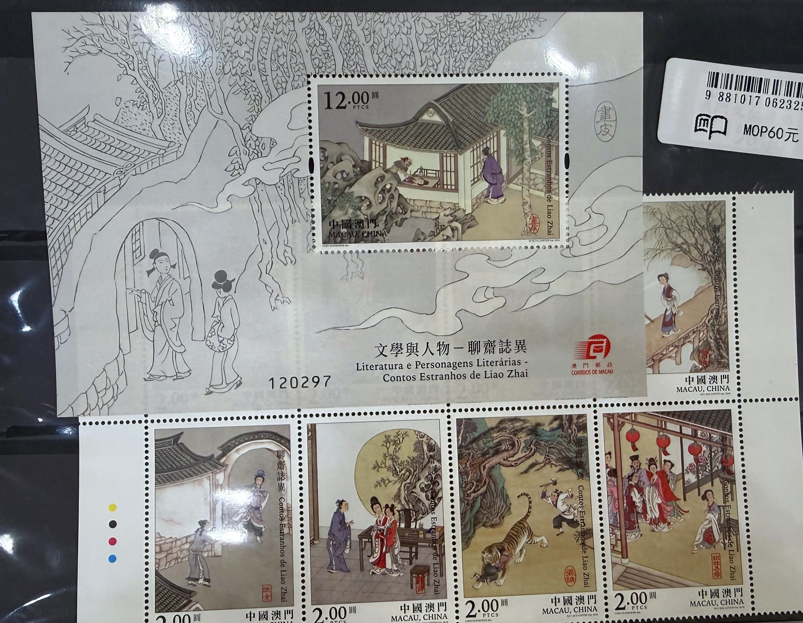
《文学与人物—聊斋志异》· 全套 8 枚 + 小型张
澳門手信 · 郵票誌 NO.09
百米长卷，缩进方寸
澳门画家陆曦用钢笔淡彩画了一百米长的澳门史，邮电局从中裁出五段：「凿炮」「织藤」「哪吒诞巡游」「葡萄牙土风舞」「妈阁庙与归帆」套票是旧时市井人物，小型张上是妈阁庙与归帆。
原作并非纯黑白，而是有褐色调子，邮票也保留了这种素色质感，在一堆彩色邮票里反而格外醒目。
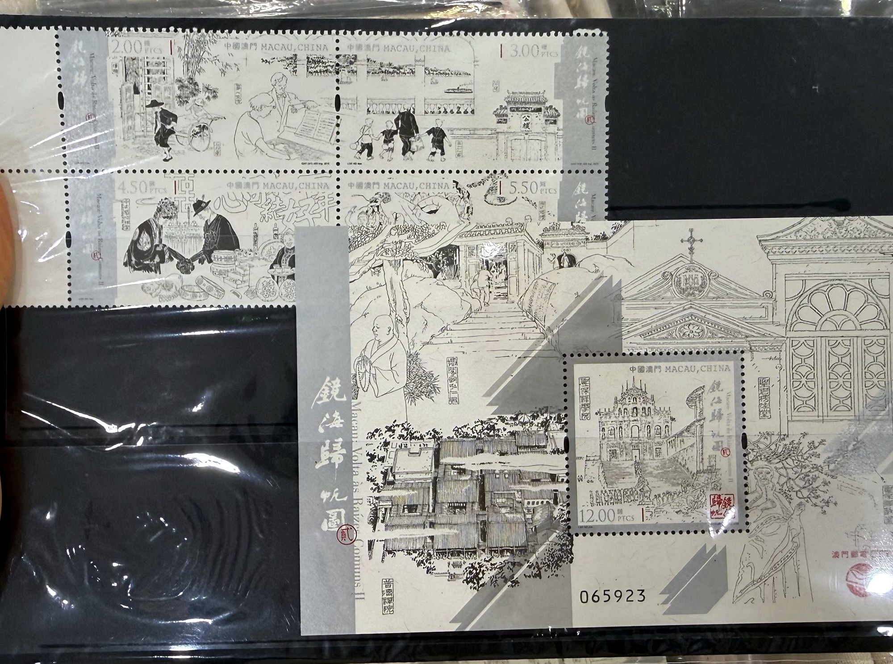
《镜海归帆图》· 套票 4 枚 + 小型张 · 原作 陆曦百米钢笔长卷
澳門手信 · 郵票誌 NO.10
莲花，澳门的区花
澳门区旗上是白莲，这套票画了四种：濠江虹、火炬、古代莲、大丽锦。小型张是一枝水墨并蒂白莲——出淤泥的那一枝。
其中 「濠江虹」 是中国花卉协会荷花分会专为澳门培育的新品种，白中带紫红，花期长、着花繁密，名字里的"濠江"就是澳门的别称。
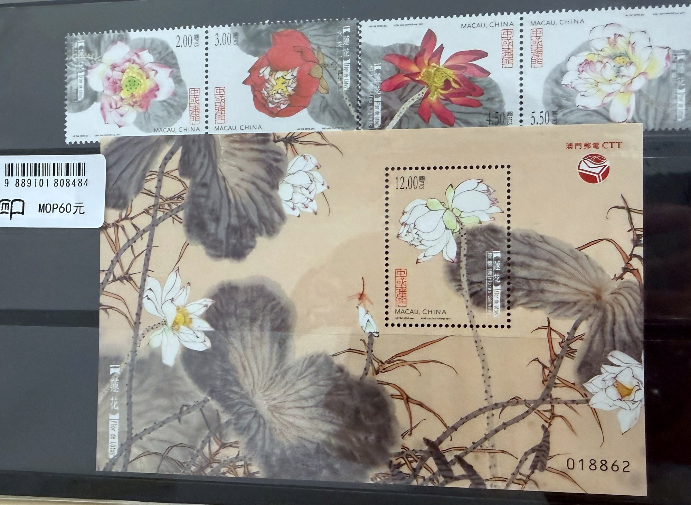
《莲花 Flor de Lótus》· 套票 4 枚 + 小型张
澳門手信 · 郵票誌 NO.11
泰山，登上澳门邮票
长寿桥、玉皇顶、天贶殿、大观峰——澳门“祖国山河”系列第一套，给了五岳之首。
小型张南天门是点睛之作——十八盘尽处，海拔1460米。孙蒋涛几乎全用墨色浓淡堆叠出泰山的苍茫，只以一点朱砂染南天门，打开画眼，正是"高山仰止"之意。
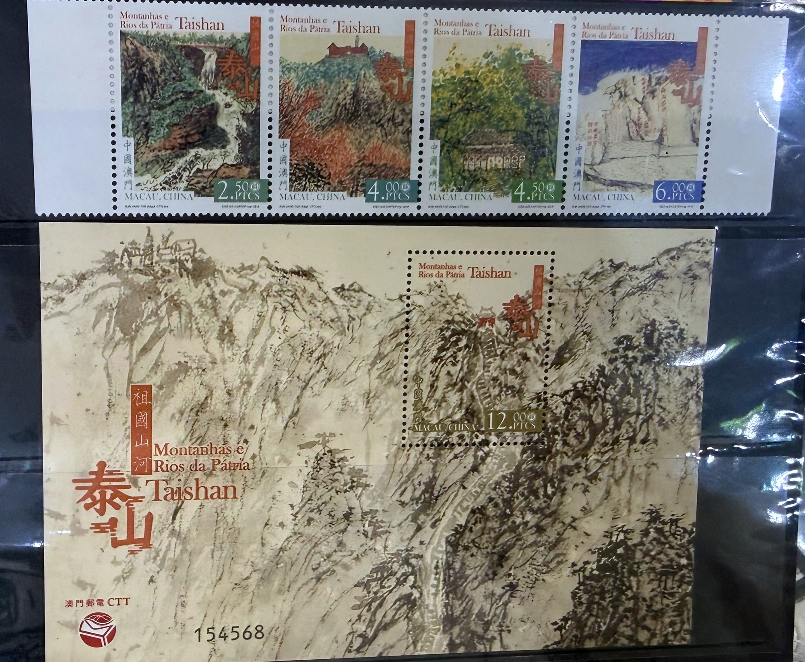
《祖国山河—泰山》· 套票 4 枚 + 小型张
澳門手信 · 郵票誌 NO.12
2026 最新的马年票
第四轮生肖的第七套。四枚水彩奔马，小型张是《八骏图》——八匹马神态各异，是今年邮品店里最抢手的一套。
四枚邮票以四季为基调，用简练线条与鲜明色块，让骏马在不同季节背景下呈现各异姿态——既有力量与速度，又含昂扬进取之气。
廖文畅的设计很见功力，他的水彩里有那种明快而不浮的质地。
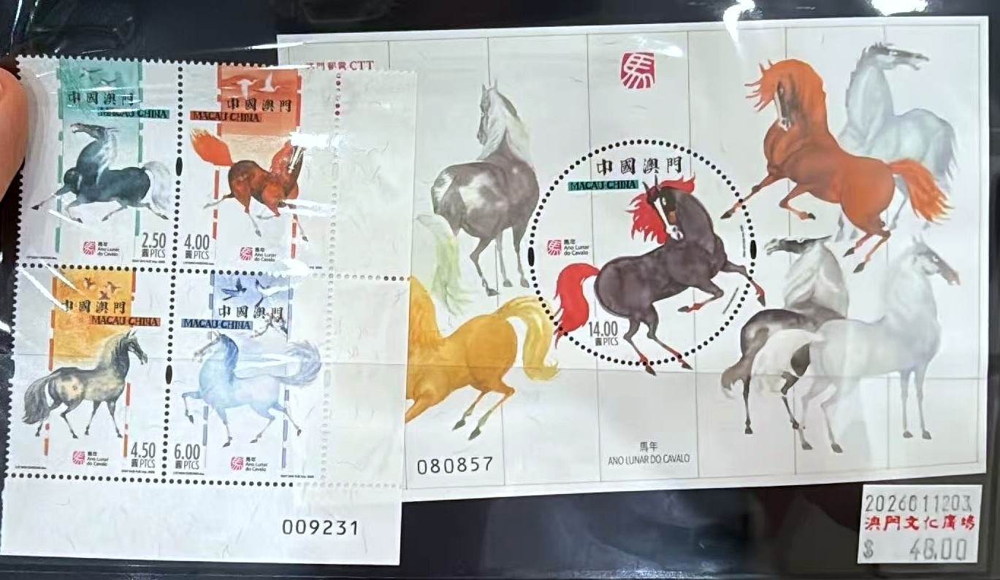
《马年 Ano Lunar do Cavalo》· 四方连 + 小型张《八骏图》